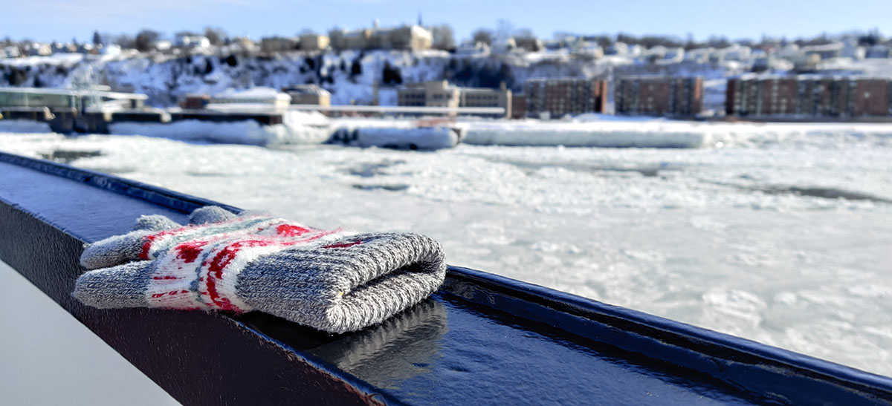
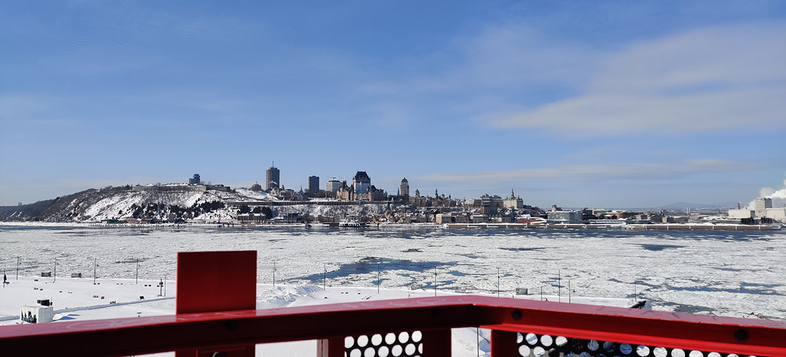
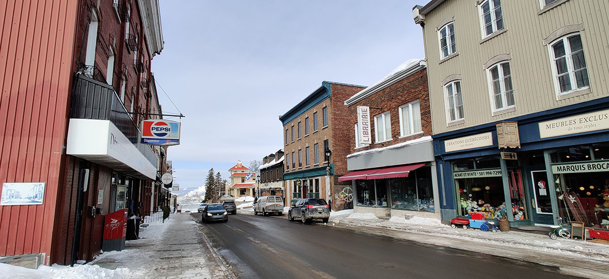
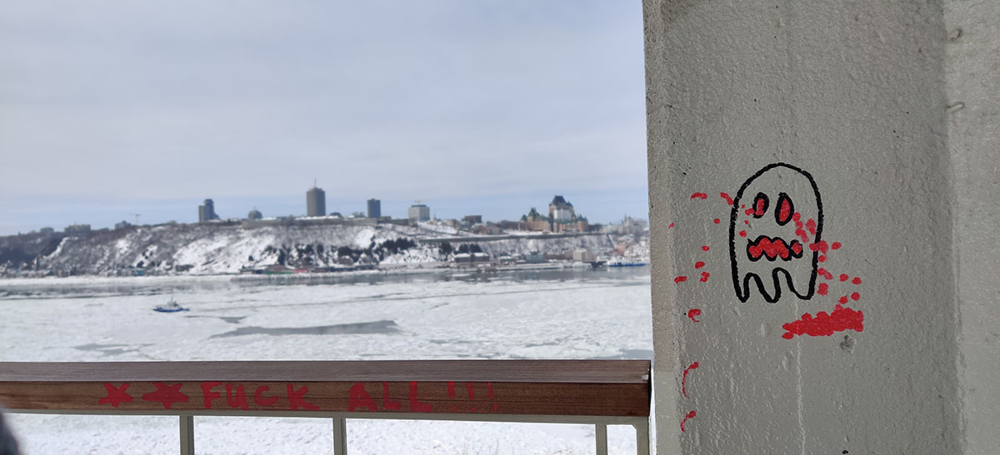
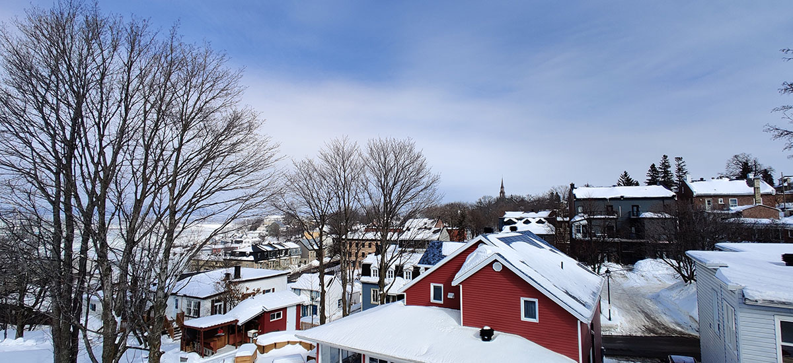
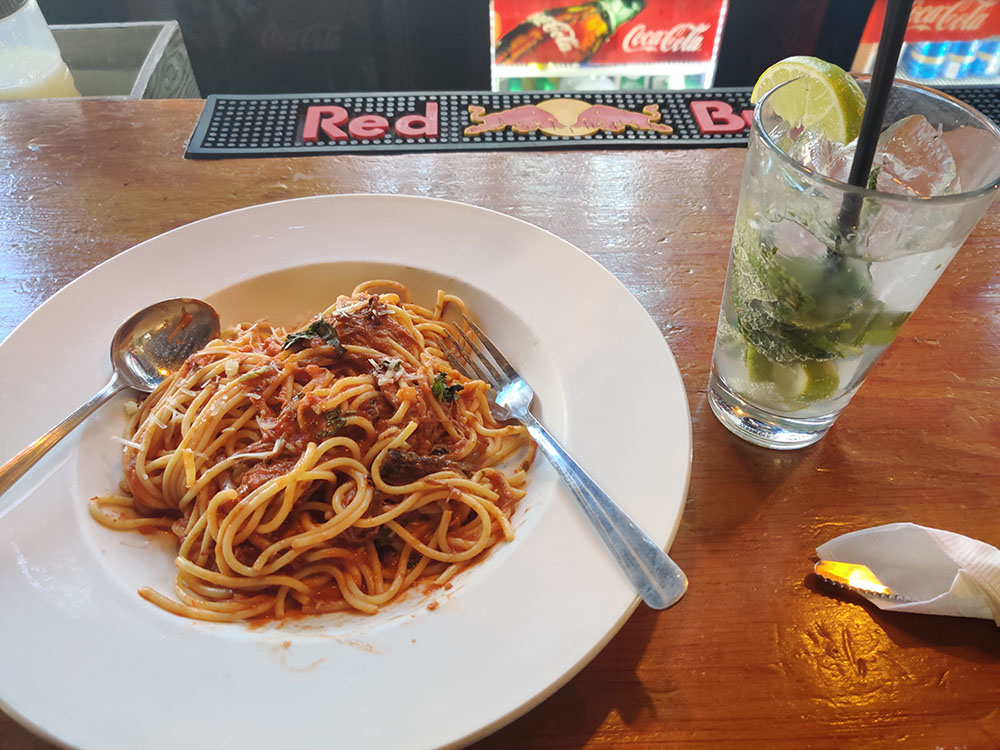
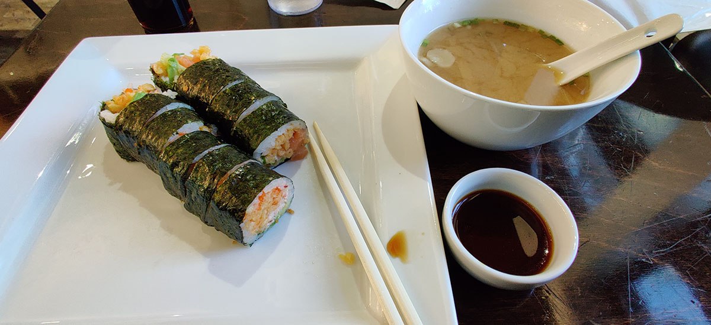

旅行的最后一天，实在是不知道还剩下什么景点了，于是睡了个懒觉，躺在床上使劲刷了会儿B站，又慢悠悠地吃了个早饭。忽然想起入住那晚，前台小哥哥为我掏出地图指点江山，圈出了好多地方让我去游玩。仔细一品，他口中去河对岸小镇的轮渡，确实可以一看。小镇的名字不偏不倚叫作Lévis，读作le-V（重音在后）因为法语的发音比较神奇。看到这个名字大家一定和我一样有很多问题，例如这个小镇它是不是盛产丹宁。小哥说对岸没什么转的但是莫得关系，无非是从另一个角度欣赏魁北克城的美丽。激动之余我也十分纳闷，为什么前人的游记中轮渡从来不配拥有姓名。想到这里，立马背上书包、戴上手套，最后一天咱们去河上走一遭。
轮渡码头的牌匾我只记得以Gare开头，因为长途巴士站的法语似乎也是Gare d’autobus，这样一来Gare多半就和英语的Terminal差不多。联想前几天坐过的公交和地铁，Arrêt应该就是Stop，而Station的意思自然一看就能理解。
周五的上午，码头人烟稀少，轮渡往返，只要七刀。船上的座位，明明容得下几百人喧闹，此刻此刻，却只有零星游客站在甲板上拍照。寒冬的河面结满了浮冰，就好像每天早上吃的可颂的酥皮。穿过浮冰的轮船就很聒噪，哗啦啦地像有人拿着钢丝球在搓澡。

下船后沿河的一条店铺都出奇地冷清，带着疑惑我走向了依山而建的步行楼梯。成功登顶我才意识到问题在哪里，这一块特么的就是个住宅区。Lévis的人们到底是觉得河岸的旅游业肯定干不过对门儿，还是有钱的👴们早已看上了这块风水宝地、捷足先登买下地盘盖房种地？
爬上山之后回头看一眼熟悉的魁北克城，这块再给两三天我都能当本地导游的弹丸之地，从远处看还真是漂亮咱们有一说一。鲜红的上山楼梯和远处白茫茫的城堡相映成趣，诉说着两岸人民的深厚友谊；我呸，我觉得只有利维市民的羡慕膜拜之情。

鲜红色的上山楼梯
贴心的利维市在楼梯旁立了个推荐步行观光路线，我说wdnmd都是别墅你让老子观光个毛线。聪明的我打开谷歌地图找最近的咖啡馆在哪里，有咖啡的地方肯定有一整排小店散发着精致的气息。结果没想到这块小商业区只有一个路口的长度，从外面看店里也都黑灯瞎火没人光顾。在转角处的咖啡馆标志着这条小街戛然而止，所幸在我离开时有两个大叔进了咖啡馆给它一点面子。

短小精悍的一排门面
我本来想走回码头返航，一抬头却发现前方高处有一个不错的亭台可以乘凉。（我一定是江郎才尽找不到韵脚接腔，特么谁想在大冬天的西北风下乘凉？）这下可好，下山都下了一半，现在又得折返。这个公园它叫Terrasse du Chevalier-de-Lévis，似乎也就一个靠着悬崖的亭台值得一看。如果就论码头附近一带，这或许是能远眺的魁北克城的最高地段。害，我怎么感觉我像是造访魁北克城的第一个中国人，即兴的探索简直多的吓人。如果后人想要远距离观摩一下魁北克城，这个公园的观景亭台请您认准。
 亭子墙上的可爱涂鸦  从公园观景台回看利维小镇的海景房也别有一番风味
中饭是在魁北克城新城区的Le Bureau de Poste，这家店也在青旅的推荐名单，因为他家所有主食是统一六刀。缺点就是它其实是个酒吧，所以空间不大、噪音倒是有点大。至于酒吧只接待成年人，我想这一点应该不需要过多提醒大家。我点了个他们的肉酱意粉，只能说做的不差。Mojito还是那个Mojito，是标准的调法。

至于晚饭，则是回到老城区吃的Masaru Sushi。大家肯定会问你干啥跑到魁北克吃日本料理？谁叫它居然在Tripadvisor上排名第一！原来他们家有名就有名在“厨师发办”，你只能选择吃多少片和对哪些食物过敏，剩下的由厨师给你做决定。我居然在日本都没有过这种体验，相比之下魁北克的寿司店差就差在一点：芥末和海草沙拉都需要额外加钱，而我以为这些东西是额外付钱“加多一碟”。总体来说，寿司很好吃，吃的非常爽。爽过法餐土豆和大鱼大肉的腻味，喂自己一口日式的清香。善哉善哉。

今天的游记非常的短，才不是因为押韵太难，而是最后一天真的没什么事情干。收拾收拾行李，睡个好觉，明天还要坐一天的巴士，从九点坐到晚上十一点半。
死磕儿~
Last modified on 2020-02-23